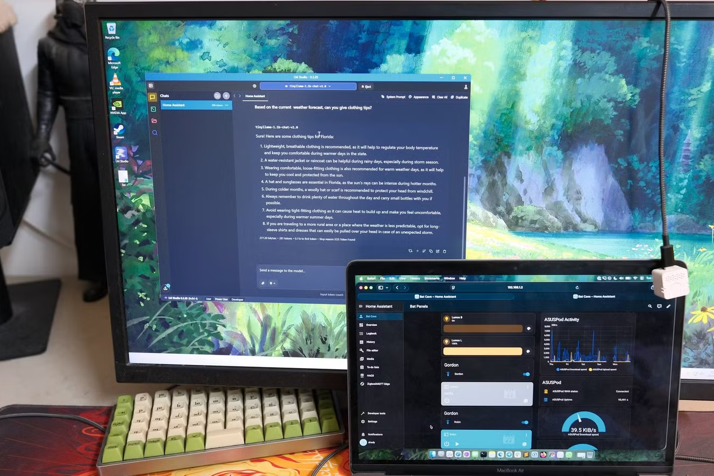

Home Assistant LLM local vs Gemini para Home: ¿cuál es mejor?
El mundo de los modelos open-weight evoluciona rápidamente — cualquiera que haya trabajado con LLM locales puede confirmarlo. El ambicioso proyecto de ejecutar un modelo de lenguaje en tu propio hardware ahora se ha convertido en un proyecto de una tarde de fin de semana. Esto se ha integrado tan rápido en la domótica que hoy es posible construir una configuración que rivaliza con lo que Google presenta como su función de IA premium.